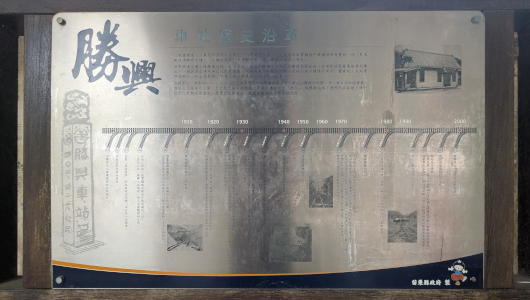

|

三義鄉勝興車站 Story
April 15, 2026
Here are the contents of the paragraph at the top half of the plaque in front of the Shengxing Train Station.
勝興車站歷史沿革
山線舊鐵道(三義至后里段)自西元1908年開通以來,一直為西部縱貫鐵路中最獨特與秀麗的一段,然因 鐵路運輸需求擴大,台鐵於民國87年換軌通車,使山線舊鐵道步入歷史。
苗栗縣境之舊山線鐵道沿線,包括車站、隧道、鐵橋,以及眾多鐵道相關設施,在搭配地區發展脈落的陳 述下,極具歷史傳承與文化教育意義,而勝興車站與龍騰斷橋,更被列為古蹟進行保存;
豐富的人文地景 與優美的山林生態景緻,使舊山線沿線展現出極佳的大地畫作。
勝興車站,標高四〇二·三二六公尺,為台灣西部縱貫鐵路最高點。車站站體建於民國二年,為日式木造建築, 傳說因位處關刀山麓,附近有九座山頭環繞,即風水傳說中之『虎穴』,
勝興車站為了避邪而在柱頭上特別 設計八卦與尖茅造型,屋簷亦呈鋸齒狀,期望以堅硬的兵器來破九虎。
Shengxing Station History
Since its inauguration in 1908, the Old Mountain Line (spanning the section between Sanyi and Houli) has stood as the most unique
and picturesque segment of Taiwan's Western Trunk Line. However, as demand for railway transport expanded, the Taiwan Railway
Administration (TRA) rerouted and reopened the line in 1998, thereby consigning the Old Mountain Line to the annals of history.
Along the route of the Old Mountain Line within Miaoli County—encompassing stations, tunnels, railway bridges, and numerous other
rail-related facilities—the sites possess profound historical heritage and educational significance when viewed within the context
of local development. Notably, Shengxing Station and the Longteng Broken Bridge have been officially designated as historical monuments
for preservation. With its rich cultural landscapes and breathtaking mountain and forest scenery, the Old Mountain Line presents a
magnificent "earth-art masterpiece" stretching across the land. Shengxing Station, situated at an elevation of 402.326 meters, marks
the highest point along Taiwan's Western Trunk Line. The station building, constructed in 1913, features a traditional Japanese-style
wooden architectural design. According to local legend, the station is situated at the foot of Guandao Mountain and is encircled by
nine distinct mountain peaks—a configuration known in Feng Shui lore as the "Tiger's Den." To ward off evil spirits, Shengxing
Station was deliberately designed with specific protective features: the column capitals are adorned with "Bagua" (Eight Trigrams)
and spearhead motifs, while the eaves feature a distinctive sawtooth pattern—all intended to utilize the imagery of formidable
weaponry to "slay the nine tigers."
Close this window Top
|
|